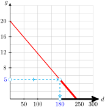
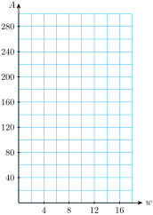
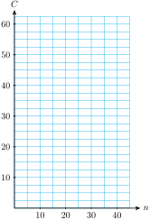

Delbert is offered a part-time job selling restaurant equipment. He will be paid $1000 per month plus a 6% commission on his sales. The sales manager tells Delbert he can expect to sell about $8000 worth of equipment per month. To help him decide whether to accept the job, Delbert does a few calculations.
Based on the sales manager’s estimate, what monthly income can Delbert expect from this job? What annual salary would that provide?
What would Delbert’s monthly salary be if he sold only $5000 of equipment per month? What would his salary be if he sold $10,000 worth per month? Compute the monthly incomes for each sales totals shown in the table.
Sales
Income
\(5000\)
\(\hphantom{0000}\)
\(10,000\)
\(\hphantom{0000}\)
\(15,000\)
\(\hphantom{0000}\)
\(20,000\)
\(\hphantom{0000}\)
\(25,000\)
\(\hphantom{0000}\)
\(30,000\)
\(\hphantom{0000}\)
\(\hphantom{0000}\)
\(\hphantom{0000}\)
\(\hphantom{0000}\)
\(\hphantom{0000}\)
Plot your data points on a graph, using sales, \(S\text{,}\) on the horizontal axis and income, \(I\text{,}\) on the vertical axis, as shown in the figure. Connect the data points to show Delbert’s monthly income for all possible monthly sales totals.
Add two new data points to the table by reading values from your graph.
Write an algebraic expression for Delbert’s monthly income, \(I\text{,}\) in terms of his monthly sales, \(S\text{.}\) Use the description in the problem to help you:
He will be paid: $1000 plus a 6% commission on his sales.
Income \(= ~~\fillinmath{XXXXXXXXXXXXXXXX} \)
Test your formula from part (5) to see if it gives the same results as those you recorded in the table.
Use your formula to find out what monthly sales total Delbert would need in order to have a monthly income of $2500.
Each increase of $1000 in monthly sales increases Delbert’s monthly income by \(\fillinmath{XXXXXX}\)
Summarize the results of your work: In your own words, describe the relationship between Delbert’s monthly sales and his monthly income. Include in your discussion a description of your graph.
Subsection1.1.1Tables, Graphs, and Equations
Definition1.1.1.Mathematical Model.
A mathematical model is a simplified description of reality that uses mathematics to help us understand a system or process.
We can use a model to analyze data, identify trends, and predict the effects of change. The first step in creating a model is to describe relationships between the variables involved.
Name three ways to represent a relationship between variables.
In the examples that follow, observe the interplay among the three modeling tools and how each contributes to the model.
Example1.1.4.
In May 2005, the city of Lyons, France, started a bicycle rental program. Over 3,000 bicycles are available at 350 computerized stations around the city. Each of the 52,000 subscribers pays an annual 5 euro fee (about $7.20) and gets a PIN to access the bicycles. The bicycles rent for 1 euro per hour and can be returned to any station.
Your community decides to set up a similar program, charging a $5 subscription fee and $3 an hour for rental. (A fraction of an hour is charged as the corresponding fraction of $3).
Make a table of values showing the cost, \(C\text{,}\) of renting a bike for various lengths of time, \(t\text{.}\)
Plot the points on a graph. Draw a curve through the data points.
Write an equation for \(C\) in terms of \(t\text{.}\)
There is an initial fee of $5, and a rental fee of $3 per hour. To find the cost, we multiply the time by $3 per hour, and add the result to the $5 subscription fee. For example, the cost of a one-hour bike ride is
\begin{align*}
\text{Cost}\amp=(\$5\text{ insurance fee})+(\$3\text{ per hour})\times(\alert{\text{one hour}})\\
C\amp=5+3(\alert{1})=8
\end{align*}
A one-hour bike ride costs $8.
We calculate the cost for the other values of \(t\) and record the results in a table as shown below.
Length of rental (hours)
Cost of rental (dollars)
\((t,C)\)
\(0\)
\(5\)
\(\quad C=5+3(\alert{0})\quad\)
\((0,5)\)
\(1\)
\(8\)
\(\quad C=5+3(\alert{1})\quad\)
\((1,8)\)
\(2\)
\(11\)
\(C=5+3(\alert{2})\)
\((2,11)\)
\(3\)
\(14\)
\(C=5+3(\alert{3})\)
\((3,14)\)
Each pair of values represents a point on the graph. The first value gives the horizontal coordinate of the point, and the second value gives the vertical coordinate.
The points lie on a straight line, as shown in the figure. The line extends infinitely in only one direction, because negative values of \(t\) do not make sense here.
To write an equation, we let \(C\) represent the cost of the rental, and we use \(t\) for the number of hours:
\begin{align*}
\text{Cost}\amp=(\$5\text{ subscription})+\$3\cdot\text{(number of hours)}\\
C\amp=5+3\cdot t
\end{align*}
What sort of variables can be described by a linear model?
Increasing variables
Variables that change at a constant rate
Variables that describe time
Variables that can be graphed
In the next example we see how a graph and its equation are related.
Example1.1.8.
Use the equation \(~ C=5+3\cdot t ~\) you found in Example 1.1.4 to answer the following questions. Then show how to find the answers by using the graph.
How much will it cost to rent a bicycle for 6 hours?
A 6-hour bike ride will cost $23. The point \(P\) on the graph in the figure represents the cost of a 6-hour bike ride. The value on the \(C\)-axis at the same height as point \(P\) is 23, so a 6-hour bike ride costs $23.
We substitute \(C=\alert{18.50}\) into the equation and solve for \(t\text{.}\)
For $18.50 you can bicycle for \(4\frac{1}{2} \) hours. The point \(Q\) on the graph represents an $18.50 bike ride. The value on the \(t\)-axis below point \(Q\) is 4.5, so $18.50 will buy a 4.5 hour bike ride.
In the preceding Example, how long can you bicycle for $9.50?
Hint: Start by finding $9.50 on the Cost (vertical axis). Then find the point on the graph with \(C\)-coordinate $9.50. Finally, find the \(t\)-coordinate of that point.
Consider the expression \(C = 5 + 3t\text{.}\) Finding a value of \(t\) when we know \(C\) is called . Finding a value of \(t\) when we know \(C\) is called .
In the examples above, the graph is increasing as \(t\) increases. In the next Example we consider a decreasing graph.
Example1.1.11.
Leon’s camper has a 20-gallon gas tank, and he gets 12 miles to the gallon. (Note that getting 12 miles to the gallon is the same as using \(\frac{1}{12}\) gallon of gas per mile.)
Write an equation for the amount of gasoline, \(g\text{,}\) left in Leon’s tank after he has driven for \(d\) miles.
Make a table of values for the equation.
Graph the equation.
If Leon has less than 5 gallons of gas left, how many miles has he driven since his last fill-up? Illustrate on the graph.
\begin{gather*}
y=(\text{starting value})+(\text{rate})\times t
\end{gather*}
However, in this problem, instead of variables \(y\) and \(t\text{,}\) we use \(g\) and \(d\text{.}\) Leon’s fuel tank started with 20 gallons, and the amount of gasoline is decreasing at a rate of \(\frac{1}{12}\) gallon for every mile that he drives. Thus,
\begin{gather*}
g=20-\frac{1}{12}d
\end{gather*}
Every time Leon drives 12 miles, he uses another gallon of gasoline. So, to make the calculations easier, we choose values that are divisible by 12.
\(d\) (miles)
0
48
96
144
\(g\) (gallons)
20
16
12
8
We scale the values of \(d\) along the horizontal axis, and the values of \(g\) along the vertical axis. Then we plot the points from the table and connect with a line, as shown in the figure below.
If Leon has less than 5 gallons of gasoline left, then \(g\lt 5\text{,}\) as shown on the \(g\)-axis. Using our model from part (a), we solve the inequality.
\begin{align*}
20-\frac{1}{12}d \amp \lt 5 \amp\amp\blert{\text{Subtract } 20 \text{ from both sides.}}\\
-\frac{1}{12}d \amp \lt -15 \amp\amp\blert{\text{Multiply by } {-12} \text{ on both sides.}} \\
d \amp\gt 180\amp\amp \begin{array}{l}
\blert{\text{Note that we reversed the direction of the}}\\
\blert{\text{the inequality when we multiplied by }{-12}. }
\end{array}
\end{align*}
Leon has driven at least 180 miles. The solution is shown on the graph below.

Note1.1.12.
In part (d) of the previous Example we used an inequality to answer the question. We use inequalities to model English phrases such as "less than," "more than," "at least," and "at most."
Leon forgot to reset his odometer after his last fill-up, but he thinks he has driven at least 150 miles. How much gas does he have left? Show this on the graph.
Hint: Locate 150 miles on the \(d\)-axis. What part of the axis represents "at least" 150 miles? Find the points on the graph with \(d\)-coordinates at least 150. What are the \(g\)-coordinates of those points?
April sells environmentally friendly cleaning products. Her income consists of $200 per week plus a commission of 9% of her sales. Write an algebraic expression for April’s weekly income, \(I\text{,}\) in terms of her sales, \(S\text{.}\)
Trinh is bicycling down a mountain road that loses 500 feet in elevation for each 1 mile of road. She started at an elevation of 6300 feet. Write an expression for Trinh’s elevation, \(h\text{,}\) in terms of the distance she has cycled, \(d\text{.}\)
Bruce buys a 50-pound bag of rice and consumes about 0.4 pounds per week. Write an expression for the amount of rice, \(R\text{,}\) Bruce has left in terms of the number of weeks, \(w\text{,}\) since he bought the bag.
10.
Delbert is offered a job as a salesman. He will be paid $1000 per month plus a 6% commission on his sales. Write an expression for Delbert’s monthly income, \(I\text{,}\) in terms of his sales, \(S\text{.}\)
Applications
11.
Frank plants a dozen corn seedlings, each 6 inches tall. With plenty of water and sunlight they will grow approximately 2 inches per day. Complete the table of values for the height, \(h\text{,}\) of the seedlings after \(t\) days.
Complete the table of values for the height, \(h\) of the seedlings after \(t\) days.
\(t\) (days)
\(0\)
\(5\)
\(10\)
\(15\)
\(20\)
\(h\) (inches)
Write an equation for the height, \(h\text{,}\) of the seedlings in terms of the number of days, \(t\text{,}\) since they were planted.
Graph the equation on the grid. Label the axes with the correct variables.
To answer questions (d) and (e), read the graph. Show your work on the graph:
How tall is the corn after 3 weeks?
When will the corn grow to 6 feet tall? (How many inches is 6 feet?)
Use algebra to find the answers for parts (d) and (e) above.
Frank also sets out some tomato plants. The height of the plants in inches after \(t\) days is:
\begin{gather*}
h = 14 + 1.5t
\end{gather*}
What do the constants in this equation tell us about the tomato plants?
12.
On October 31, Betty and Paul fill their 250-gallon oil tank for their heater. Beginning in November they use an average of 15 gallons of oil per week.
Complete the table of values for the amount of oil, \(A\text{,}\) left in the tank after \(w\) weeks.
\(w\) (weeks)
\(0\)
\(4\)
\(8\)
\(12\)
\(16\)
\(A\) (gallons)
Write an equation that expresses the amount of oil, \(A\text{,}\) in terms of the number of weeks, \(w\text{,}\) since October 31.
Graph the equation.

How much did the amount of fuel oil in the tank decrease between the third week and the eighth week? Illustrate this amount on the graph.
During which weeks will the tank contain more than 175 gallons of fuel oil? Illustrate on the graph.
Write and solve an inequality to verify your answer to part (e).
13.
The boiling point of water changes with altitude. At sea level, water boils at \(212\degree\)F, and the boiling point decreases by approximately \(2\degree\)F for each 1000-foot increase in altitude.
Write an equation for the boiling point, \(B\text{,}\) in terms of \(a\text{,}\) the altitude in thousands of feet.
Complete the table of values.
Altitude (1000 ft)
\(0\)
\(1\)
\(2\)
\(3\)
\(4\)
\(5\)
Boiling point (\(\degree\)F)
\(\hphantom{0000}\)
\(\hphantom{0000}\)
\(\hphantom{0000}\)
\(\hphantom{0000}\)
\(\hphantom{0000}\)
\(\hphantom{0000}\)
Graph the equation.
How much does the boiling point decrease when the altitude increases from 1000 to 3000 feet? Illustrate this amount on the graph.
At what altitudes is the boiling point less than \(204\degree\)F? Illustrate on the graph.
14.
The taxi out of Dulles Airport charges a traveler with one suitcase an initial fee of $2.00, plus $1.50 for each mile traveled. Complete the table of values showing the charge, \(C\text{,}\) for a trip of \(n\) miles.
\(n\)
\(0\)
\(5\)
\(10\)
\(15\)
\(20\)
\(25\)
\(C\)
\(\hphantom{0000}\)
\(\hphantom{0000}\)
\(\hphantom{0000}\)
\(\hphantom{0000}\)
\(\hphantom{0000}\)
\(\hphantom{0000}\)
Write an equation for the charge, \(C\text{,}\) in terms of the number of miles traveled, \(n\text{.}\)
Graph the equation.

What is the charge for a trip to Mount Vernon, 40 miles from the airport? Illustrate the answer on your graph.
If a ride to the National Institutes of Health (NIH) costs $39.50, how far is it from the airport to the NIH? Illustrate the answer on your graph.